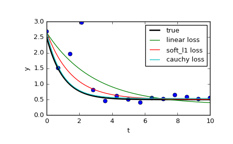

scipy.optimize.least_squares¶
-
scipy.optimize.least_squares(fun, x0, jac='2-point', bounds=(-inf, inf), method='trf', ftol=1e-08, xtol=1e-08, gtol=1e-08, x_scale=1.0, loss='linear', f_scale=1.0, diff_step=None, tr_solver=None, tr_options={}, jac_sparsity=None, max_nfev=None, verbose=0, args=(), kwargs={})[source]¶ Solve a nonlinear least-squares problem with bounds on the variables.
Given the residuals f(x) (an m-dimensional real function of n real variables) and the loss function rho(s) (a scalar function),
least_squaresfinds a local minimum of the cost function F(x):minimize F(x) = 0.5 * sum(rho(f_i(x)**2), i = 0, ..., m - 1) subject to lb <= x <= ub
The purpose of the loss function rho(s) is to reduce the influence of outliers on the solution.
Parameters: fun : callable
Function which computes the vector of residuals, with the signature
fun(x, *args, **kwargs), i.e., the minimization proceeds with respect to its first argument. The argumentxpassed to this function is an ndarray of shape (n,) (never a scalar, even for n=1). It must return a 1-d array_like of shape (m,) or a scalar. If the argumentxis complex or the functionfunreturns complex residuals, it must be wrapped in a real function of real arguments, as shown at the end of the Examples section.x0 : array_like with shape (n,) or float
Initial guess on independent variables. If float, it will be treated as a 1-d array with one element.
jac : {‘2-point’, ‘3-point’, ‘cs’, callable}, optional
Method of computing the Jacobian matrix (an m-by-n matrix, where element (i, j) is the partial derivative of f[i] with respect to x[j]). The keywords select a finite difference scheme for numerical estimation. The scheme ‘3-point’ is more accurate, but requires twice as much operations compared to ‘2-point’ (default). The scheme ‘cs’ uses complex steps, and while potentially the most accurate, it is applicable only when fun correctly handles complex inputs and can be analytically continued to the complex plane. Method ‘lm’ always uses the ‘2-point’ scheme. If callable, it is used as
jac(x, *args, **kwargs)and should return a good approximation (or the exact value) for the Jacobian as an array_like (np.atleast_2d is applied), a sparse matrix or ascipy.sparse.linalg.LinearOperator.bounds : 2-tuple of array_like, optional
Lower and upper bounds on independent variables. Defaults to no bounds. Each array must match the size of x0 or be a scalar, in the latter case a bound will be the same for all variables. Use
np.infwith an appropriate sign to disable bounds on all or some variables.method : {‘trf’, ‘dogbox’, ‘lm’}, optional
Algorithm to perform minimization.
- ‘trf’ : Trust Region Reflective algorithm, particularly suitable for large sparse problems with bounds. Generally robust method.
- ‘dogbox’ : dogleg algorithm with rectangular trust regions, typical use case is small problems with bounds. Not recommended for problems with rank-deficient Jacobian.
- ‘lm’ : Levenberg-Marquardt algorithm as implemented in MINPACK. Doesn’t handle bounds and sparse Jacobians. Usually the most efficient method for small unconstrained problems.
Default is ‘trf’. See Notes for more information.
ftol : float, optional
Tolerance for termination by the change of the cost function. Default is 1e-8. The optimization process is stopped when
dF < ftol * F, and there was an adequate agreement between a local quadratic model and the true model in the last step.xtol : float, optional
Tolerance for termination by the change of the independent variables. Default is 1e-8. The exact condition depends on the method used:
- For ‘trf’ and ‘dogbox’ :
norm(dx) < xtol * (xtol + norm(x)) - For ‘lm’ :
Delta < xtol * norm(xs), whereDeltais a trust-region radius andxsis the value ofxscaled according to x_scale parameter (see below).
gtol : float, optional
Tolerance for termination by the norm of the gradient. Default is 1e-8. The exact condition depends on a method used:
- For ‘trf’ :
norm(g_scaled, ord=np.inf) < gtol, whereg_scaledis the value of the gradient scaled to account for the presence of the bounds [STIR]. - For ‘dogbox’ :
norm(g_free, ord=np.inf) < gtol, whereg_freeis the gradient with respect to the variables which are not in the optimal state on the boundary. - For ‘lm’ : the maximum absolute value of the cosine of angles between columns of the Jacobian and the residual vector is less than gtol, or the residual vector is zero.
x_scale : array_like or ‘jac’, optional
Characteristic scale of each variable. Setting x_scale is equivalent to reformulating the problem in scaled variables
xs = x / x_scale. An alternative view is that the size of a trust region along j-th dimension is proportional tox_scale[j]. Improved convergence may be achieved by setting x_scale such that a step of a given size along any of the scaled variables has a similar effect on the cost function. If set to ‘jac’, the scale is iteratively updated using the inverse norms of the columns of the Jacobian matrix (as described in [JJMore]).loss : str or callable, optional
Determines the loss function. The following keyword values are allowed:
- ‘linear’ (default) :
rho(z) = z. Gives a standard least-squares problem. - ‘soft_l1’ :
rho(z) = 2 * ((1 + z)**0.5 - 1). The smooth approximation of l1 (absolute value) loss. Usually a good choice for robust least squares. - ‘huber’ :
rho(z) = z if z <= 1 else 2*z**0.5 - 1. Works similarly to ‘soft_l1’. - ‘cauchy’ :
rho(z) = ln(1 + z). Severely weakens outliers influence, but may cause difficulties in optimization process. - ‘arctan’ :
rho(z) = arctan(z). Limits a maximum loss on a single residual, has properties similar to ‘cauchy’.
If callable, it must take a 1-d ndarray
z=f**2and return an array_like with shape (3, m) where row 0 contains function values, row 1 contains first derivatives and row 2 contains second derivatives. Method ‘lm’ supports only ‘linear’ loss.f_scale : float, optional
Value of soft margin between inlier and outlier residuals, default is 1.0. The loss function is evaluated as follows
rho_(f**2) = C**2 * rho(f**2 / C**2), whereCis f_scale, andrhois determined by loss parameter. This parameter has no effect withloss='linear', but for other loss values it is of crucial importance.max_nfev : None or int, optional
Maximum number of function evaluations before the termination. If None (default), the value is chosen automatically:
- For ‘trf’ and ‘dogbox’ : 100 * n.
- For ‘lm’ : 100 * n if jac is callable and 100 * n * (n + 1) otherwise (because ‘lm’ counts function calls in Jacobian estimation).
diff_step : None or array_like, optional
Determines the relative step size for the finite difference approximation of the Jacobian. The actual step is computed as
x * diff_step. If None (default), then diff_step is taken to be a conventional “optimal” power of machine epsilon for the finite difference scheme used [NR].tr_solver : {None, ‘exact’, ‘lsmr’}, optional
Method for solving trust-region subproblems, relevant only for ‘trf’ and ‘dogbox’ methods.
- ‘exact’ is suitable for not very large problems with dense Jacobian matrices. The computational complexity per iteration is comparable to a singular value decomposition of the Jacobian matrix.
- ‘lsmr’ is suitable for problems with sparse and large Jacobian
matrices. It uses the iterative procedure
scipy.sparse.linalg.lsmrfor finding a solution of a linear least-squares problem and only requires matrix-vector product evaluations.
If None (default) the solver is chosen based on the type of Jacobian returned on the first iteration.
tr_options : dict, optional
Keyword options passed to trust-region solver.
tr_solver='exact': tr_options are ignored.tr_solver='lsmr': options forscipy.sparse.linalg.lsmr. Additionallymethod='trf'supports ‘regularize’ option (bool, default is True) which adds a regularization term to the normal equation, which improves convergence if the Jacobian is rank-deficient [Byrd] (eq. 3.4).
jac_sparsity : {None, array_like, sparse matrix}, optional
Defines the sparsity structure of the Jacobian matrix for finite difference estimation, its shape must be (m, n). If the Jacobian has only few non-zero elements in each row, providing the sparsity structure will greatly speed up the computations [Curtis]. A zero entry means that a corresponding element in the Jacobian is identically zero. If provided, forces the use of ‘lsmr’ trust-region solver. If None (default) then dense differencing will be used. Has no effect for ‘lm’ method.
verbose : {0, 1, 2}, optional
Level of algorithm’s verbosity:
- 0 (default) : work silently.
- 1 : display a termination report.
- 2 : display progress during iterations (not supported by ‘lm’ method).
args, kwargs : tuple and dict, optional
Additional arguments passed to fun and jac. Both empty by default. The calling signature is
fun(x, *args, **kwargs)and the same for jac.Returns: OptimizeResultwith the following fields defined:x : ndarray, shape (n,)
Solution found.
cost : float
Value of the cost function at the solution.
fun : ndarray, shape (m,)
Vector of residuals at the solution.
jac : ndarray, sparse matrix or LinearOperator, shape (m, n)
Modified Jacobian matrix at the solution, in the sense that J^T J is a Gauss-Newton approximation of the Hessian of the cost function. The type is the same as the one used by the algorithm.
grad : ndarray, shape (m,)
Gradient of the cost function at the solution.
optimality : float
First-order optimality measure. In unconstrained problems, it is always the uniform norm of the gradient. In constrained problems, it is the quantity which was compared with gtol during iterations.
active_mask : ndarray of int, shape (n,)
Each component shows whether a corresponding constraint is active (that is, whether a variable is at the bound):
- 0 : a constraint is not active.
- -1 : a lower bound is active.
- 1 : an upper bound is active.
Might be somewhat arbitrary for ‘trf’ method as it generates a sequence of strictly feasible iterates and active_mask is determined within a tolerance threshold.
nfev : int
Number of function evaluations done. Methods ‘trf’ and ‘dogbox’ do not count function calls for numerical Jacobian approximation, as opposed to ‘lm’ method.
njev : int or None
Number of Jacobian evaluations done. If numerical Jacobian approximation is used in ‘lm’ method, it is set to None.
status : int
The reason for algorithm termination:
- -1 : improper input parameters status returned from MINPACK.
- 0 : the maximum number of function evaluations is exceeded.
- 1 : gtol termination condition is satisfied.
- 2 : ftol termination condition is satisfied.
- 3 : xtol termination condition is satisfied.
- 4 : Both ftol and xtol termination conditions are satisfied.
message : str
Verbal description of the termination reason.
success : bool
True if one of the convergence criteria is satisfied (status > 0).
See also
Notes
Method ‘lm’ (Levenberg-Marquardt) calls a wrapper over least-squares algorithms implemented in MINPACK (lmder, lmdif). It runs the Levenberg-Marquardt algorithm formulated as a trust-region type algorithm. The implementation is based on paper [JJMore], it is very robust and efficient with a lot of smart tricks. It should be your first choice for unconstrained problems. Note that it doesn’t support bounds. Also it doesn’t work when m < n.
Method ‘trf’ (Trust Region Reflective) is motivated by the process of solving a system of equations, which constitute the first-order optimality condition for a bound-constrained minimization problem as formulated in [STIR]. The algorithm iteratively solves trust-region subproblems augmented by a special diagonal quadratic term and with trust-region shape determined by the distance from the bounds and the direction of the gradient. This enhancements help to avoid making steps directly into bounds and efficiently explore the whole space of variables. To further improve convergence, the algorithm considers search directions reflected from the bounds. To obey theoretical requirements, the algorithm keeps iterates strictly feasible. With dense Jacobians trust-region subproblems are solved by an exact method very similar to the one described in [JJMore] (and implemented in MINPACK). The difference from the MINPACK implementation is that a singular value decomposition of a Jacobian matrix is done once per iteration, instead of a QR decomposition and series of Givens rotation eliminations. For large sparse Jacobians a 2-d subspace approach of solving trust-region subproblems is used [STIR], [Byrd]. The subspace is spanned by a scaled gradient and an approximate Gauss-Newton solution delivered by
scipy.sparse.linalg.lsmr. When no constraints are imposed the algorithm is very similar to MINPACK and has generally comparable performance. The algorithm works quite robust in unbounded and bounded problems, thus it is chosen as a default algorithm.Method ‘dogbox’ operates in a trust-region framework, but considers rectangular trust regions as opposed to conventional ellipsoids [Voglis]. The intersection of a current trust region and initial bounds is again rectangular, so on each iteration a quadratic minimization problem subject to bound constraints is solved approximately by Powell’s dogleg method [NumOpt]. The required Gauss-Newton step can be computed exactly for dense Jacobians or approximately by
scipy.sparse.linalg.lsmrfor large sparse Jacobians. The algorithm is likely to exhibit slow convergence when the rank of Jacobian is less than the number of variables. The algorithm often outperforms ‘trf’ in bounded problems with a small number of variables.Robust loss functions are implemented as described in [BA]. The idea is to modify a residual vector and a Jacobian matrix on each iteration such that computed gradient and Gauss-Newton Hessian approximation match the true gradient and Hessian approximation of the cost function. Then the algorithm proceeds in a normal way, i.e. robust loss functions are implemented as a simple wrapper over standard least-squares algorithms.
New in version 0.17.0.
References
[STIR] (1, 2, 3, 4) M. A. Branch, T. F. Coleman, and Y. Li, “A Subspace, Interior, and Conjugate Gradient Method for Large-Scale Bound-Constrained Minimization Problems,” SIAM Journal on Scientific Computing, Vol. 21, Number 1, pp 1-23, 1999. [NR] (1, 2) William H. Press et. al., “Numerical Recipes. The Art of Scientific Computing. 3rd edition”, Sec. 5.7. [Byrd] (1, 2, 3) R. H. Byrd, R. B. Schnabel and G. A. Shultz, “Approximate solution of the trust region problem by minimization over two-dimensional subspaces”, Math. Programming, 40, pp. 247-263, 1988. [Curtis] (1, 2) A. Curtis, M. J. D. Powell, and J. Reid, “On the estimation of sparse Jacobian matrices”, Journal of the Institute of Mathematics and its Applications, 13, pp. 117-120, 1974. [JJMore] (1, 2, 3, 4) J. J. More, “The Levenberg-Marquardt Algorithm: Implementation and Theory,” Numerical Analysis, ed. G. A. Watson, Lecture Notes in Mathematics 630, Springer Verlag, pp. 105-116, 1977. [Voglis] (1, 2) C. Voglis and I. E. Lagaris, “A Rectangular Trust Region Dogleg Approach for Unconstrained and Bound Constrained Nonlinear Optimization”, WSEAS International Conference on Applied Mathematics, Corfu, Greece, 2004. [NumOpt] (1, 2) J. Nocedal and S. J. Wright, “Numerical optimization, 2nd edition”, Chapter 4. [BA] (1, 2) B. Triggs et. al., “Bundle Adjustment - A Modern Synthesis”, Proceedings of the International Workshop on Vision Algorithms: Theory and Practice, pp. 298-372, 1999. Examples
In this example we find a minimum of the Rosenbrock function without bounds on independed variables.
>>> def fun_rosenbrock(x): ... return np.array([10 * (x[1] - x[0]**2), (1 - x[0])])
Notice that we only provide the vector of the residuals. The algorithm constructs the cost function as a sum of squares of the residuals, which gives the Rosenbrock function. The exact minimum is at
x = [1.0, 1.0].>>> from scipy.optimize import least_squares >>> x0_rosenbrock = np.array([2, 2]) >>> res_1 = least_squares(fun_rosenbrock, x0_rosenbrock) >>> res_1.x array([ 1., 1.]) >>> res_1.cost 9.8669242910846867e-30 >>> res_1.optimality 8.8928864934219529e-14
We now constrain the variables, in such a way that the previous solution becomes infeasible. Specifically, we require that
x[1] >= 1.5, andx[0]left unconstrained. To this end, we specify the bounds parameter toleast_squaresin the formbounds=([-np.inf, 1.5], np.inf).We also provide the analytic Jacobian:
>>> def jac_rosenbrock(x): ... return np.array([ ... [-20 * x[0], 10], ... [-1, 0]])
Putting this all together, we see that the new solution lies on the bound:
>>> res_2 = least_squares(fun_rosenbrock, x0_rosenbrock, jac_rosenbrock, ... bounds=([-np.inf, 1.5], np.inf)) >>> res_2.x array([ 1.22437075, 1.5 ]) >>> res_2.cost 0.025213093946805685 >>> res_2.optimality 1.5885401433157753e-07
Now we solve a system of equations (i.e., the cost function should be zero at a minimum) for a Broyden tridiagonal vector-valued function of 100000 variables:
>>> def fun_broyden(x): ... f = (3 - x) * x + 1 ... f[1:] -= x[:-1] ... f[:-1] -= 2 * x[1:] ... return f
The corresponding Jacobian matrix is sparse. We tell the algorithm to estimate it by finite differences and provide the sparsity structure of Jacobian to significantly speed up this process.
>>> from scipy.sparse import lil_matrix >>> def sparsity_broyden(n): ... sparsity = lil_matrix((n, n), dtype=int) ... i = np.arange(n) ... sparsity[i, i] = 1 ... i = np.arange(1, n) ... sparsity[i, i - 1] = 1 ... i = np.arange(n - 1) ... sparsity[i, i + 1] = 1 ... return sparsity ... >>> n = 100000 >>> x0_broyden = -np.ones(n) ... >>> res_3 = least_squares(fun_broyden, x0_broyden, ... jac_sparsity=sparsity_broyden(n)) >>> res_3.cost 4.5687069299604613e-23 >>> res_3.optimality 1.1650454296851518e-11
Let’s also solve a curve fitting problem using robust loss function to take care of outliers in the data. Define the model function as
y = a + b * exp(c * t), where t is a predictor variable, y is an observation and a, b, c are parameters to estimate.First, define the function which generates the data with noise and outliers, define the model parameters, and generate data:
>>> def gen_data(t, a, b, c, noise=0, n_outliers=0, random_state=0): ... y = a + b * np.exp(t * c) ... ... rnd = np.random.RandomState(random_state) ... error = noise * rnd.randn(t.size) ... outliers = rnd.randint(0, t.size, n_outliers) ... error[outliers] *= 10 ... ... return y + error ... >>> a = 0.5 >>> b = 2.0 >>> c = -1 >>> t_min = 0 >>> t_max = 10 >>> n_points = 15 ... >>> t_train = np.linspace(t_min, t_max, n_points) >>> y_train = gen_data(t_train, a, b, c, noise=0.1, n_outliers=3)
Define function for computing residuals and initial estimate of parameters.
>>> def fun(x, t, y): ... return x[0] + x[1] * np.exp(x[2] * t) - y ... >>> x0 = np.array([1.0, 1.0, 0.0])
Compute a standard least-squares solution:
>>> res_lsq = least_squares(fun, x0, args=(t_train, y_train))
Now compute two solutions with two different robust loss functions. The parameter f_scale is set to 0.1, meaning that inlier residuals should not significantly exceed 0.1 (the noise level used).
>>> res_soft_l1 = least_squares(fun, x0, loss='soft_l1', f_scale=0.1, ... args=(t_train, y_train)) >>> res_log = least_squares(fun, x0, loss='cauchy', f_scale=0.1, ... args=(t_train, y_train))
And finally plot all the curves. We see that by selecting an appropriate loss we can get estimates close to optimal even in the presence of strong outliers. But keep in mind that generally it is recommended to try ‘soft_l1’ or ‘huber’ losses first (if at all necessary) as the other two options may cause difficulties in optimization process.
>>> t_test = np.linspace(t_min, t_max, n_points * 10) >>> y_true = gen_data(t_test, a, b, c) >>> y_lsq = gen_data(t_test, *res_lsq.x) >>> y_soft_l1 = gen_data(t_test, *res_soft_l1.x) >>> y_log = gen_data(t_test, *res_log.x) ... >>> import matplotlib.pyplot as plt >>> plt.plot(t_train, y_train, 'o') >>> plt.plot(t_test, y_true, 'k', linewidth=2, label='true') >>> plt.plot(t_test, y_lsq, label='linear loss') >>> plt.plot(t_test, y_soft_l1, label='soft_l1 loss') >>> plt.plot(t_test, y_log, label='cauchy loss') >>> plt.xlabel("t") >>> plt.ylabel("y") >>> plt.legend() >>> plt.show()
In the next example, we show how complex-valued residual functions of complex variables can be optimized with
least_squares(). Consider the following function:>>> def f(z): ... return z - (0.5 + 0.5j)
We wrap it into a function of real variables that returns real residuals by simply handling the real and imaginary parts as independent variables:
>>> def f_wrap(x): ... fx = f(x[0] + 1j*x[1]) ... return np.array([fx.real, fx.imag])
Thus, instead of the original m-dimensional complex function of n complex variables we optimize a 2m-dimensional real function of 2n real variables:
>>> from scipy.optimize import least_squares >>> res_wrapped = least_squares(f_wrap, (0.1, 0.1), bounds=([0, 0], [1, 1])) >>> z = res_wrapped.x[0] + res_wrapped.x[1]*1j >>> z (0.49999999999925893+0.49999999999925893j)